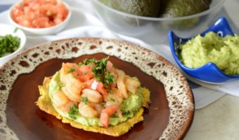

Qué es kale? Hablemos y cocinemos con este mega vegetal

Cada vez que publico una receta con kale (col rizada) al menos alguien pregunta: que es kale? Es una pena que no sea tan conocida, al menos acá en …

me gusta mucho el articulo

Me encanta sigan asi
Patacones sin aceite: ¡revelamos el secreto!
Felizmente, sí. En el post de hoy aprenderemos a hacer patacones sin aceite. Estoy segura de que muchos lo agradecerán porque es un plato común en …
me gusta el articulo tips salidables para toda la familia
buen artiuclo lo pondre en practica